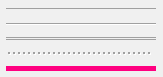

Creates an interface element that is a Separator, but it does not have native decorations.
It inherits from IupCanvas.
Ihandle* IupFlatSeparator(); [in C]
iup.flatseparator{} -> (ih: ihandle) [in Lua]
flatseparator() [in LED]
Returns: the identifier of the created element, or NULL if an error occurs.
Inherits all attributes and callbacks of the IupCanvas, but redefines a few attributes.
BARSIZE (non inheritable): controls the size of the separator in the opposite direction of its orientation. Default: 5.
COLOR (non inheritable): Changes the color of the separator. The value should be given in "R G B" color style. Default: "192 192 192".
ORIENTATION (non inheritable): Indicates the orientation of the separator. Possible values are "VERTICAL" or "HORIZONTAL". Default: "VERTICAL".
EXPAND (non inheritable): Its behavior depends on the orientation. It will expand in the direction of the separator, but occupying only the available space.
STYLE (non inheritable): The separator appearance. Can be: "LINE", "SUNKENLINE", "DUALLINES", "GRIP" or "FILL". Default: SUNKENLINE.
FONT, SIZE, RASTERSIZE, CLIENTSIZE, CLIENTOFFSET, POSITION, MINSIZE, MAXSIZE: also accepted.
Inherits all callbacks of the IupCanvas, but redefines the ACTION callback.
The IupFlatSeparator is used internally in IupSplit (since 3.25).
| STYLE=LINE |  |
| STYLE=SUNKENLINE | |
| STYLE=DUALLINES | |
| STYLE=GRIP | |
| STYLE=FILL COLOR="255 0 128" |